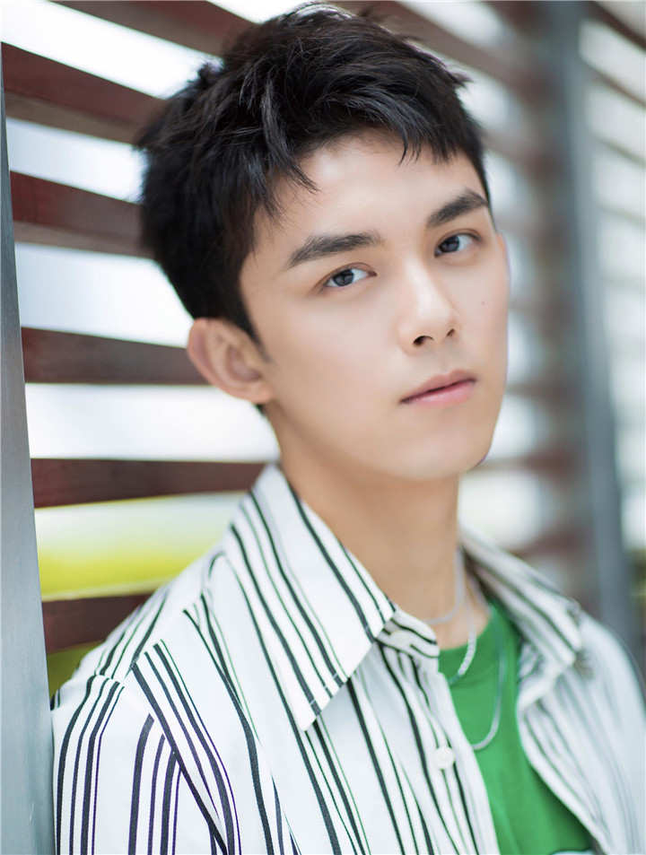

Love like the galaxy
Cast

Leo Wu
Leo Wu is a young Chinese actor.
He is 1.82 m (6ft 0 in) and born on 26 December 1999 in Shanghai (China).
He is also known by his Chinese name Wu Lei.
Other name's: Lei Lei, China's little brother.
He was active since 2002 till present.
His first appearance was in a commercials at the age of 3.
In 2011 he won th Best Young Actor at the 28th Flying Apsaras Awards for his role in Mo's Mischief.